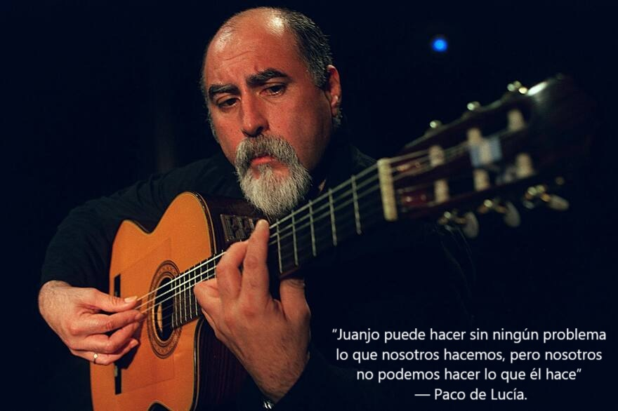

Heredero del alma del tango y el folklore argentino, Juanjo Domínguez — nacido un 23 de octubre de 1951 en Junín, provincia de Buenos Aires, y se fue de gira un 10 de febrero de 2019 — deslumbró al mundo con una técnica prodigiosa, destacando su tremolo en tres cuerdas. Su guitarra, como mini orquesta hecha cuerdas, supo acompañar a grandes artistas como Andrés Calamaro, Diego Cigala, María Graña, el Polaco Goyeneche y Horacio Guaraní, dejando un legado imborrable en la música popular latinoamericana.
